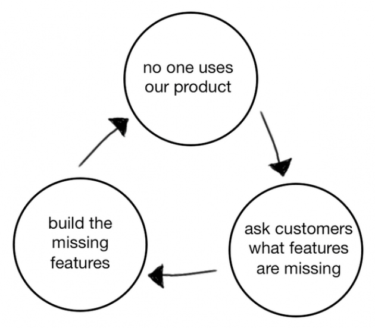
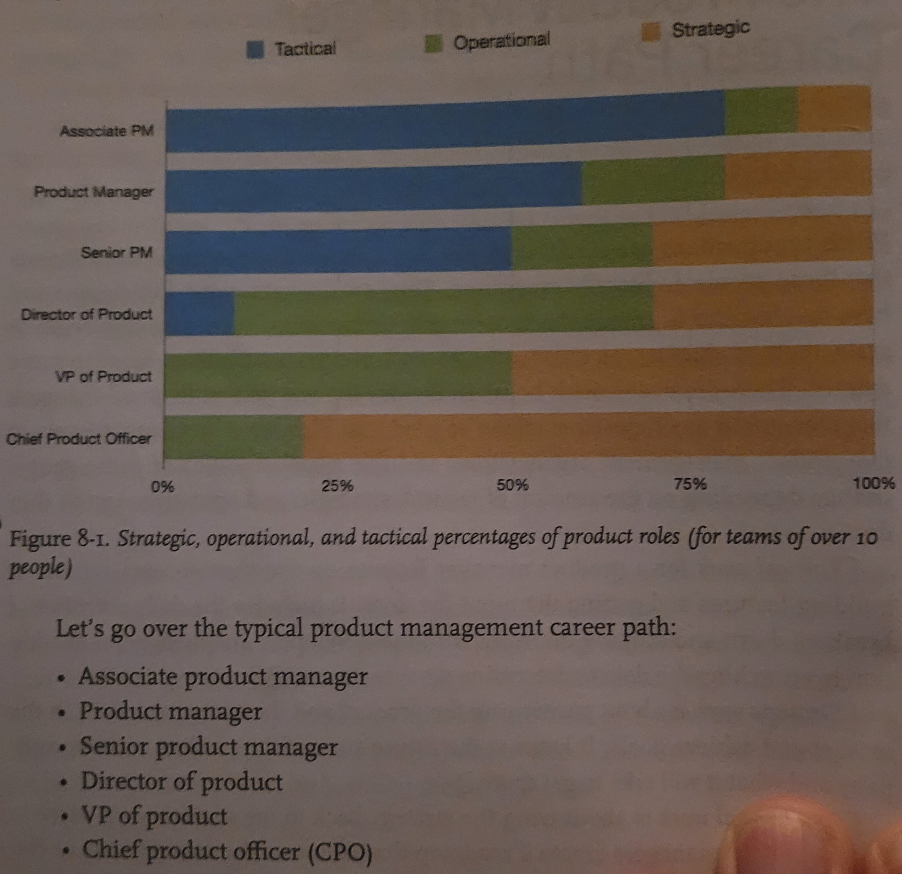

Escaping the Build Trap: How Effective Product Management Creates Real Value by Melissa Perri
Core Ideas
- The Build Trap: This is the central concept of the book. It refers to the common situation where companies become overly focused on shipping features (outputs) rather than on achieving desired outcomes and creating value for customers. Organizations caught in the build trap are essentially "feature factories," churning out products without a clear understanding of whether they are actually solving real problems or achieving business goals.
- Outcome-Focused Product Development: Perri advocates for a shift towards outcome-focused product development. This means starting with a clear understanding of the desired business outcomes and customer needs, and then working backward to identify the solutions (features, products, etc.) that will best achieve those outcomes.
- The Role of the Product Manager: The book emphasizes the critical role of product managers in leading this transformation. Product managers are seen as the key individuals responsible for understanding customer needs, defining product strategy, and ensuring that development efforts are aligned with business goals.
- Product Kata: Perri introduces the "Product Kata" framework, inspired by the Toyota Kata, which provides a structured approach to experimentation and learning. It's a continuous improvement process that helps product teams iterate toward desired outcomes.
- Buiding a Product-Led Organization: Building a Product-Led Organization: The book provides guidance on how to build a product-led organization, where product thinking is embedded throughout the company, and decisions are driven by customer value and business outcomes.
Preface
- The Build Trap: Being so focused on shipping features and developing as many cool ideas as you can that you don't even think about the outcome of those features. It is when you stop connecting the goals of the company or the needs of your customers back to work you are creating.
- Common Phrases Heard When Caught in the Build Trap:
- "My bonus is tied to the features we ship. I need to get those out because it's getting close to the end of the year"
- "My manager was getting upset because we were not shipping. I had to get something out the door or I'd get in trouble."
- Escaping the Build Trap: A guide to getting out of the build trap with great product management. It looks at what it means to become and be a product-led organization, which involves four key components:
- Creating a product manager role with the right responsibilities and structure
- Enabling those product managers with a strategy that promotes good decision making
- Understanding the process of determining what product to build, through experimentation and optimization
- Supporting everyone with the right organizational policies, culture, and rewards to allow product management to thrive.
- The most important role you can have: student. [This is why it is crucial that product-led leaders have a growth mindset and that they are willing to learn and take advice from all contributors (from those above and below them on the org chart)]
Part 1: The Build Trap
Core concepts
- Definition: The build trap is when organizations become stuck measuring their success by outputs rather than outcomes. It's when they focus more on shipping and developing features rather than on the actual value those things produce. When companies stop producing real value for users, they begin to lose market share, allowing them to be disrupted. Companies can get out of the build trap by setting themselves up to develop intentional and robust product management practices. At that point, product managers can find the opportunities to maximize business and customer value.
- Consequences: The build trap is a terrifying place for companies because it distracts them. Everyone is focused on shipping more software that they lose sight of what is important: producing value for customers, hitting business goals, and innovating against competitors.
- Mindset Shift: The build trap is about realizing you have to change the way you've always done things. It's about confusing output-centric measures of progress with real measures of value.
The Value Exchange System

- Misunderstanding Value: Companies end up in the build trap when they misunderstand value. [This is why I believe one of the most important, and difficult tasks is to create quantifiable metrics for providing customer and product value]
- Output vs. Outcome: Instead of associating value with outcomes they want to create for their business and customers, they measure value by the number of things they produce.
- Customer Value: The customer realizes value only when the customers' problems are resolved and their wants and needs are fulfilled.
- Business Value: Every feature you build and any initiative you take as a company should result in some outcome that is tied back to something that can fuel your business (i.e., money, data, knowledge capital, etc.). This is business value.
- Measuring Value: [Yep, I stated this above] Value can be difficult to measure and to measure well from a customer or user perspective. Products and services are not inherently valuable. It's what they do for the customer or user that has the value -- solving a problem, for example, or fulfilling a desire or need. [This is why I believe in having a guiding vision and requirements document. So you don't lose sight of what value you are trying to bring.]
- Lack of Customer Understanding: When companies do not understand their customers' or users' problems well, they cannot possibly define value for them. Instead of doing the work to learn this information about customers, they create a proxy that is easy to measure. "Value" becomes the quantity of features that are delivered, and, as a result, the number of features shipped becomes the primary metric of success.
- Detrimental Motivation: These companies then motivate their employees and judge them for success with the same proxies. Developers are rewarded for fine-tuning interactions and creating pixel-perfect designs. Product managers are rewarded for writing long specification documents, or creating extensive backlogs. The team is rewarded for shipping features. This thinking is detrimental yet pervasive.
- Author's Example:
- Company over-promised during a sales process, giving customers whatever it took to get the contract signed. The result was a ton of one-off features that satisfied the needs of only one client, rather than a strategic choice to build would scale for many clients. [Why scaling is really important to think about. Not building a one of product to handle one demo, but something that can provide value across all demos]
- Instead of analyzing how each of these features provided unique value to its customers and moving the company strategy forward, the organization was stuck in reactive mode. It was not building with intent.
- You have to get to know your customers and users. To gain this understanding you need to get employees closer to their customers and users, which means having the right policies throughout the organization to enable this. [Gate-keeping, silo-structures, and rigidly defined roles and responsibilities hinder this]
Constraints on the Value Exchange System
- Outputs: Outputs are easily quantified things that we produce -- number of products or features, number of releases, or velocity of development teams.
- Outcomes: Outcomes are the things that result when we finally deliver those features and the customer problems are solved.
Project Versus Product Versus Services
- Products: Products are vehicles of value. They deliver value repeatedly to customers and users without requiring the company to build something new every time [the word repeatedly here really highlights the importance of building a product that can scale].
- Services: Services, unlike products, use human labor to primarily deliver value to the user.
- Projects: Project, a discrete scope of work that has a particular aim. Usually has a deadline, milestones, and specific outputs that will be delivered. When projects are complete, the aims reached, and you move on to the next one. Projects are an essential part of product development, but the mentality of thinking only in projects will cause damage.
- The Importance of Product Management: This is why the concept of product management -- and that of having product managers -- is so important: you need the discipline to move toward organizing for products over projects. Companies that optimize their products to achieve value are called product-led organizations. The organizations are characterized by product-driven growth, scaling their organization through software products, and optimizing them until they reach the desired outcomes.
The Product-Led Organization
- Definition: Product-led companies understand that the success of their products is the primary driver of growth and value for their company. They prioritize, organize, and strategize around product success. [I actually obsess over this. Probably too much, given my current role]. This is what gets a company out of the build trap.
- Other Leadership Models (and their pitfalls):
- Sales-led: Contracts define product strategy; roadmap driven by sales promises, without strategic alignment; difficulty scaling. Their sales process gets ahead of their product strategy, and they continually need to play catch-up to make their commitments. This leaves no room for product teams to strategize or explore what could push the company further.
- Visionary-led: Powerful with the right visionary, but not sustainable; innovation shouldn't rely on a single person.
- Technology-led: Driven by the latest technology; often lacks a market-facing, value-led strategy.
- Characteristics of Product-Led Organizations: Product-led companies optimize for their business outcomes, align their product strategy to these goals, and then prioritize the most effective projects that will help develop those products into sustainable drivers of growth. [Notice the word sustainable, it suggests I'm correct in thinking and prioritizing scaling over getting something out the door]. To become product-led, you need to take a look at the roles, the strategy, the process, and the organization itself.
What We Know and What We Don't
- Known-Known = Facts:
- Identifying what you know to be true about the situation.
- Known-Unknown = Questions:
- These are clarified enough that you know what question to ask. They are assumptions that you want to test, data points that you can investigate, or problems that you can identify and explore. You use discovery methods and experimentation to clarify these and turn them into Facts.
- Unknown-Known = Intuition:
- i.e., those moments when you say, "I feel like this is the right thing to do."
- Unknown-Unknowns = Discovery:
- These are the things you don't know you don't know. You don't know well enough to ask the right questions or identify the knowledge gaps. These tend to be moments of surprise that need to be discovered.
- Product Management's Domain: Product management is the domain of recognizing and investigating the known unknowns and of reducing the universe around the unknown unknowns. Product managers identify features and products that will solve customer problems while achieving business goals. They optimize the Value Exchange System. Most roles in companies do not cross over much between the tech side and business side. Product managers fit right in the middle and translate needs into a product that will satisfy the customer while sustaining and growing the business.
- The Importance of Product Managers: Product managers are the key to becoming product-led.
Part 2: Roles
The Role of the Product Manager
- Product management is a career, not just a role you play on a team. The product manager deeply understands both the business and the customer to identify the right opportunities to produce value. They are responsible for synthesizing multiple pieces of data, including user analytics, customer feedback, market research, and stakeholder opinions, and then determining in which direction the team should move. They keep the team focused on the why - why are we building this product, and what outcome will it produce? The CPO is the cornerstone of the product team in companies, helping to tie together the business outcomes to the road-map and to represent its impact to the board. Companies need to create a standardized product management career path to attract the right talent and to provide them with growth opportunities in order to remain competitive in today's market.
Bad Product Manager Archetypes
- There are a few paths available today to learn product management. It isn't taught at college and it's only Microsoft and Google that have an entry-level career path for product managers. Most product managers have been "promoted" from software development.
- The mini-CEO
- A product manager who tends to be arrogant and think the product needs to be made how the think it should. Doesn't listen to the team developing the product.
- The waiter [the most common archetype I've encountered]
- A product manager who, at heart, is an order taker. They go to their stakeholders, customers, or managers, ask for what they want, and turn those wants into a list of items to be developed. The ere is no goal. There is no vision. There is no decision making involved.
- Waiters often fall victim to the product death cycle [see figure below], a specific form of the build trap. Ideas are implemented without validating them. It's not the customers job to come up with their own solutions. That is the product managers job. The PM needs to deeply understand their problems and then determine the best solutions for the customer. 
- Waiters are reactive thinkers, not strategic thinkers. There's usually an amount of learned helplessness that contributes to that. They don't believe that they can push back on these solutions and dive deeper into solutions. But that's not true. Customers want their problems solved. Leaders want to hit goals. Pushing back is essential to building a successful product. That's part of the job. [Amen!]
- Waiters are not focussed on the why, they tend to focus a lot on the when.
- The Former Project Manager
- Project managers are responsible for the when. When will a project finish? Is everyone on track? Will we hit our deadline?
- Product managers are responsible for the why. Why are we building this? How does it deliver value to our customers? How does it help meet the goals of the business? The latter questions are more difficult to to answer than the former.
- Many project managers in companies get turned into product managers or product owners. But they often lack the experience needed to be a great product manager. Answering why is very different than answering when. It requires a strategic mindset that understands the customer, business, market, and organization. This is a critical skill set for a great product manager.
A Great Product Manager
- The real role of the product manager is to work with a team to create the right product that balances meeting business needs with solving user problems.
- They need to recognize team members' strengths and work with them to achieve a common goal. They need to convince their team -- and the rest of the company -- that what they are working toward is the right thing to be building. These influencing skill are essential.
- Bad product managers believe they own the entire product and therefore can tell everyone what to build.
- Product managers really own the "why" of what they are building. They know the goal at hand and understand which direction the team should be building toward, depending on the company strategy and communicate this directly to the rest of the team.
- They solidify the product vision, crafting it and communicating it.
- At the end of the day, it's the team, collectively, that really owns the product.
- Too often product managers dive into creating solutions without thinking through the associated risks. [Or continue down paths that have known and will lead to dead-ends with little to no value add]
- In many cases organizations hand down solutions, and skip setting success metrics and goal. [In my experience this happens a lot. Management is unsure what they want, or how to measure value]
- Most organizations do not give their people the necessary time to do product vision and research work. They would rather hold them responsible for a steady stream of outputs and measure success based on stacking backlogs and writing stories [or outcomes on cherry-picked use cases].
- Good product managers are able to figure out how to achieve goals for the business by creating or optimizing products, all with a view toward solving actual customer problems. [This often requires push-back and medium-to-long term thinking, which for some reason, is rare]
- Product management is a career
The Product Management Career Path
- Tactical work for a product manager focuses on the shorter-term actions of building features and getting them out the door. It includes the daily activities of breaking down and scoping work with the developers and designers, in addition to crunching the data to determine what to do next.
- Strategic work is about positioning the product and company to win in the market and achieve goals. It looks at the future state of the product and company and what it will take to get there.
- Operational work is about tying the strategy back to the tactical work. Here is where the product manager create a roadmap that connects the current stat of the product to the future state and that aligns with the teams around the work.
- Understanding the technical implications of building software or hardware, knowing how user experience can impact user value, and connecting that back to the business goals are basic building blocks of this discipline. 
- Associate Product Manager
- The associate product manager role is an entry-level position.
- Product Manager
- The product manager works with a development team and UX designer to ideate and build the right solutions for the customers. They are the ones on the ground floor, talking to users, synthesizing data, and making decisions from a feature perspective. Product managers are usually responsible for feature or a set of features that are part of a larger packaged product.
- The PM needs to be strategic enough to help craft the vision of the features and how they fit into the larger product. They need to be tactical enough to ensure a smooth execution of the solution. They tend to skew more operational than strategic because at
- PM reports to a director of product or a VP of product.
- Senior Product Manager
- Same responsibilities as a product manager, but oversee more scope or complex product.
- As high as one can go as an IC.
- A position for people who like difficult problems and want to work on new, innovative products. Similar to the architect role in software development (which focuses on more on laying the development structure and scaling it rather than managing other developers).
- They are also usually entrepreneurial and want to be involved in the entire product lifecycle, from ideation to launch to scaling.
- Direct of Product
- Usually only found at larger companies. Is the critical role for scaling.
- The director of product is responsible for the product strategy and roadmap for a product or set of products, usually at the time horizon of 1-2 years.
- Responsible for the operational effectiveness of the team, making sure the teams are aligned and working toward the same goals.
- VP of Prodcut
- Oversees the strategy and operations for an entire product line.
- Responsible for the financial success of their product.
- Responsible for connecting the company goals back to the growth of their product. Take data and inputs from their team, set the vision and goals for the overall product.
- Responsible for a product team(s). They have to dive into tactical aspects of the product work to ensure that things get done. They are very entrepreneurial and great at launching and growing new products.
- VP of product skew either more strategic or more tactical. Successful VPs tend to be more strategic. They need to understand how to scale their product and need to hire in people who can take over the tactical and operational components.
- CPO (Chief Product Officer)
- Responsible for the entire product portfolio of the company.
- Makes sure the entire product portfolio is working together to achieve the company goals.
- Responsible for the economic success of the business through the growth of the product portfolio.
- Key traits: product, technology, financial managements, inspire confidence, empathize, and are relentless and resilient.
- Responsible for inspiring confidence in the product direction by gaining buy-in and alignment across key departments and stakeholders.
- Must influence by being able to empathize with the needs of the business and the customers by being authentic.
- Must be relentless and resilient. They have the desire to dig in and find out what is working and what is not. They are constantly assessing themselves accountable to data. When something does not work as planned, they need the tenacity to keep digging and find out what will.
Organizing Your Teams
- Companies tend to organize in three main ways: value streams, features, and technical components.
- A value stream is all of the activities needed to deliver value to the customer. That includes the processes, from discovering the problem, setting the goals, and conceiving of the idea, to delivering the actual product or service. Organize your teams around value streams and strategy.
Part 3: Strategy
Strategy
- A good strategy is not a plan; it's a framework that helps you make decisions. Product strategy connects the vision and economic outcomes of the company back to the product portfolio, individual product initiatives, and solution options for the teams. Strategy creation is the process of determining the direction of the company and developing the framework in which people make decisions. Strategies are created at each level and then deployed across the organization.
What is Strategy?
- Good strategy isn't a detailed plan. It's a framework that helps you make decisions. Too often, people think of their product strategy as a document made up of stakeholders' wish lists of features and detailed information on how those wishes should be accomplished.
- Thinking of strategy as a plan is what gets us into the build trap.
- In his book on the subject, The Art of Action, Stephen Bungay writes, "Strategy is a deployable decision-making framework, enabling action to achieve desired outcomes, constrained by current capabilities, coherently aligned to the existing context."
- A good strategy should transcend the iterations of features, focusing more on the higher-level goals and vision. A good strategy should sustain an organization for years. If you are changing strategy yearly or monthly without good reason from data or the market, you are treating your strategy as a plan rather than as a framework.
Strategic Gaps
- When companies approach strategy as a plan, they often fail to achieve what they expected. This failure stems from the actions taken to fill the following gaps that exist between outcomes, plans, and actions. These gaps ultimately cause friction within the organization. They are:
- The Knowledge Gap:
- The knowledge gap is the difference between what management would like to know and what the company actually knows. Organizations try to fill this gap by providing and demanding more detailed information.
- A deluge of information isn't always that helpful for upper management. You need to focus on communicating and asking for just enough information to make a decision.
- Instead of seeking more detailed information, upper management should be limiting its direction to defining and communicating the strategic intent or the goals of the business. The strategic intents combine to communicate where the company is heading and what it desires to achieve when it gets there. The strategic intent points the team toward the outcomes the business wants to achieve.
- The Alignment Gap:
- The alignment gap is the difference between what people do and what management wants them to do, which is to achieve the business goals.
- Organizations try to fill this gap by providing more detailed instruction, whereas instead, they should allow each level within the company to define how it will achieve the intent of the next level up.
- Lack of leadership alignment is by far the biggest issue the author sees standing in the way of successful product management.
- The Effects Gap:
- The effects gap is the difference between what we expect our actions to achieve and what actually happens. When organizations do not see the results they want, they try to fill this gap by putting more controls in place. However, that is the worst thing you can do in this scenario. Giving individuals and teams the freedom to adjust their actions so that they are in line with their goals is what will truly allow them to achieve results.
- The Knowledge Gap:
- Autonomy is what allows organizations to scale.
- Leading by authority is a relic of the Industrial Age methodology when low-skilled workers were supervised closely so that their output was maximized. In the world of software, we don't work this way. We're hiring incredibly smart people and paying them hundreds of thousands of dollars to make decisions on how to grow companies by making complex software that customers love. When you have that sort of talent, you need to give them room to make decisions so that you can get the full benefit of their knowledge and skill.
- That's what the strategic framework promotes. If you're aligned coherently, and you have a good strategic framework, you can allow people to make decisions without a lot of management oversight.
Creating a Good Strategic Framework
- It's important to be outcome-oriented, not output-oriented.
- A good company strategy should be made up of two parts: the operational framework (how to keep the day-to-day activities of the company moving) and the strategic framework (how the company realizes the vision through product and service development in the market).
- The strategic framework aligns the company strategy and vision with the products that are developed by the teams. Having a strong company vision and product visions that align to the strategic framework helps the companies avoid swirl in planning and execution. These companies that are busy creating visions and strategies every year often are thinking too much in the short term and aren't planning enough for the future.
- Strategies are interconnecting stories told throughout the organization that explain the objective and outcomes tailored to a specific time frame. We call this act of communicating and aligning those narratives strategic deployment.
- In most product organizations, there should be four major levels and strategy deployment: vision, strategic intent, product initiatives, options.
[Insert Figure Here - Needs to be created or sourced]
- Vision and strategic intent are at the company level, whereas product initiatives and options are specific to the products or services of the company. Strategy deployment and strategy creation, though, are two different things. A significant amount of work goes into defining what each of these should be according to their product lines and teams and then communicating them upward and downward for buying.
- Strategy creation is the process of figuring out which direction the company should act upon and developing the framework in which people make decisions. Strategies are created at each level and then deployed across the organization.
- Strategy is about how you take the organization from where you currently are and reach the vision. For a strategy created, you must first understand the vision or where you want to go. Then we can identify the problems or obstacles standing in our way of getting there and experimenting around tackling them. We repeatedly do this until we reach the vision.
[Insert Figure 12-2 Here - Needs to be created or sourced]
- With product development, you can harness the same approach, but we need to customize it to your specific situation.
[Insert Figure 12-3 Here - Needs to be created or sourced]
Company-Level Vision and Strategic Intents
- The company vision is the linchpin in the architecture. It sets the direction and provides meaning for everything that follows. Having a strong company vision gives you a framework on which to think about your product.
- Products are just details on how the company vision is manifested. They are the vehicles for value, the things you sell to your customers while receiving some form of value in return. Here, the company vision is the wrapper that gives meaning to all the products and services you offer.
- What is the difference between a company mission and vision?
- A good mission explains why the company exists.
- A vision, on the other hand, explains where the company is going and that purpose.
- Vision statements should provide focus for the company. They are short, memorable, and clearly articulated. They also don't include fluffy terminology.
- The vision should remain stable over a long period of time. How you would tend to reach that vision changes as your company matures and develops. Strategic intents communicate the company's current areas of focus that help realize the vision. These intents usually take a while to reach, on the magnitude of 1 to several years.
[Insert Figure 13-1 Here - Needs to be created or sourced]
- When organizations plan their strategic intents, they should think about how each part of the organization can contribute to these goals. For growing companies, increasing revenue is going to be the most important bucket here. But for larger enterprises, you should be evaluating initiatives across the company in each area.
- One is usually good for a small company, and three is plenty for a large organization. Yes, three. I know that sounds like a few goals for an organization of thousands of people, but that is the key. This is also where the level and the time frame matter.
- Strategic intents should be at a high level and business focused.
[Create Figure 13-2 Here - Needs to be created or sourced]
Product Vision and Portfolio
- Product initiatives translate the business goals into the problems that we will solve with our product. The product initiatives answer how. How can I reach these business goals by optimizing my products or building new ones?
- Options are defined as your bets. They represent the possible solutions that teams will explore to solve the product initiative.
- Product initiatives set the direction for the product teams to explore options.
- Product initiatives tie the goals of the company back to the problem we can solve for the users or customers. Product managers are in charge of making sure the product initiatives and options are aligned with the vision of an existing product or portfolio.
- New products may end up being created to solve these problems for your users. The product vision and portfolio vision keep you anchored in the problems and solutions you want to explore.
- The vision is a simple statement that describes the problem the user is trying to solve and the capabilities it enables for them to solve it. It does not get into specific details in the features but focuses more on the qualities that are important to the user.
- Sometimes one of the problems that should be solved is not related directly to the product division. This is where a company would decide to introduce a new product and to create a product portfolio.
- The Chief Product Officer (CPO) is responsible for setting the direction and overseeing the product portfolio.
- Having a philosophy for how your products or services help your company reach that vision in the near term or long term is key. Here are some common questions the CPO might ask:
- How do all of our products work as a system to provide value to our customers?
- What unique value does each of the product lines offer that make this a compelling system?
- What overall values and guidelines should we consider when deciding on new product solutions?
- What should we stop doing or building because it does not serve this vision?
- The product initiatives emerge from the work that needs to be done across the product portfolio to achieve the Strategic Intents and to further the individual product visions. This is also where you want to make sure that you are balancing the work of the teams with the direction of the company. The CPO is responsible for figuring out how to balance these areas of work in a framework.
Product Management Process
- Usually, when you think about processes, we focus more on actively developing software than we do about building the right software. This is the build trap.